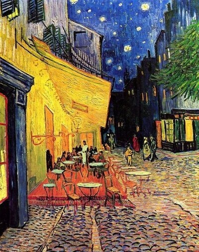

A Noite Estrelada - Vincent van GoghBarcos de Pesca no Mar - Vincent Van GoghGirassóis - Vincent van Gogh

Terraço do Café à Noite - Vincent van GoghOperários - Tarsila do AmaralAbaporu - Tarsila do AmaralMonalisa - Leonardo da VinciMona Cat - Romero BrittoO Nascimento de Vênus - Sandro BotticelliA Criação de Adão - MichelangeloAs Duas Fridas - Frida Kahlo